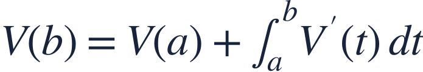
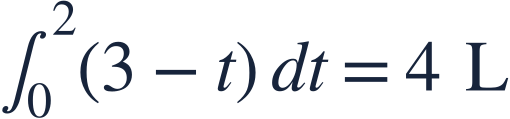

Inflow outflow and net change
유입 유출 순변화
A tank’s final amount equals its initial amount plus accumulated net flow.
탱크의 최종량은 초기량에 순유입량을 누적하여 더한 값입니다.
A tank’s final amount equals its initial amount plus accumulated net flow.
탱크의 최종량은 초기량에 순유입량을 누적하여 더한 값입니다.
Time is in minutes and both flow rates are in L/min.
시간은 분이며 두 유량의 단위는 L/min입니다.

Integrating a rate gives change; adding the initial amount gives the actual amount.
변화율을 적분하면 변화량이며 초기량을 더해야 실제 양이 됩니다.
Subtract outflow from inflow before integrating.
적분 전에 유입량에서 유출량을 뺍니다.

The tank gains a net 4 liters.
탱크는 순수하게 4리터를 얻습니다.
The final volume includes the original 10 liters.
최종 부피에는 처음의 10리터가 포함됩니다.
A negative net rate means volume decreases; it does not mean volume is already negative.
순변화율이 음수이면 양이 감소하는 것이며 이미 양이 음수라는 뜻은 아닙니다.
Find V(3) with constant rates over 3 minutes.
3분 동안 유량이 일정할 때 V(3)을 구하세요.